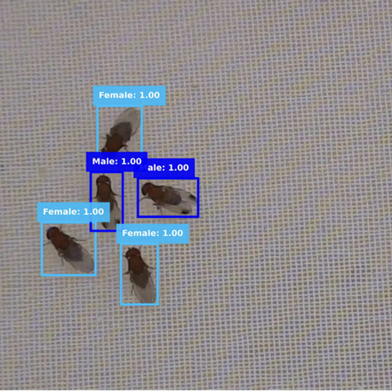
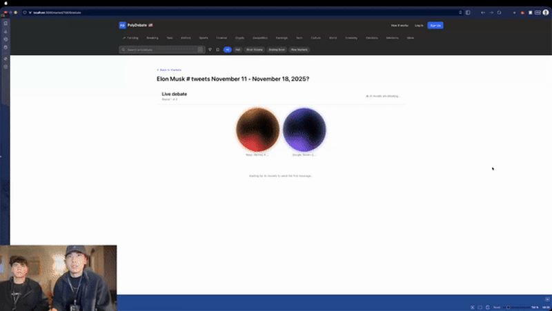

Trajectory Tracking
Real-time computer vision system for behavioral analysis of biological specimens.
Python
OpenCV
Computer Vision
Passionate about Machine Learning, Computer Vision, and Backend Engineering. Currently optimizing ML models at Warren Lab and building scalable backend systems.
class KonstantinSavkin:
def __init__(self):
self.location = "Corvallis, OR"
self.education = "Oregon State University"
self.gpa = 3.97
self.focus = [
"Machine Learning",
"Computer Vision",
"Backend Engineering"
]
def get_status(self):
return "Open to Summer 2026 Internships"I am a Sophomore Computer Science student at Oregon State University with a 3.97 GPA. My journey in tech is driven by a curiosity to understand how machines learn and how to build robust systems that scale.
Currently, I am a Laboratory Assistant at Warren Lab, where I apply Computer Vision techniques to biological research. I engineer pipelines for image classification and object detection, directly impacting research efficiency.
Laboratory Assistant
Real-time computer vision system for behavioral analysis of biological specimens.

Deep learning model for specimen classification achieving 98.24% test accuracy.

AI-powered debate platform integrating 100+ AI models with real-time prediction market data.
I'm actively seeking Summer 2026 internships in ML/AI, Computer Vision, and Backend Engineering.
Get In Touch